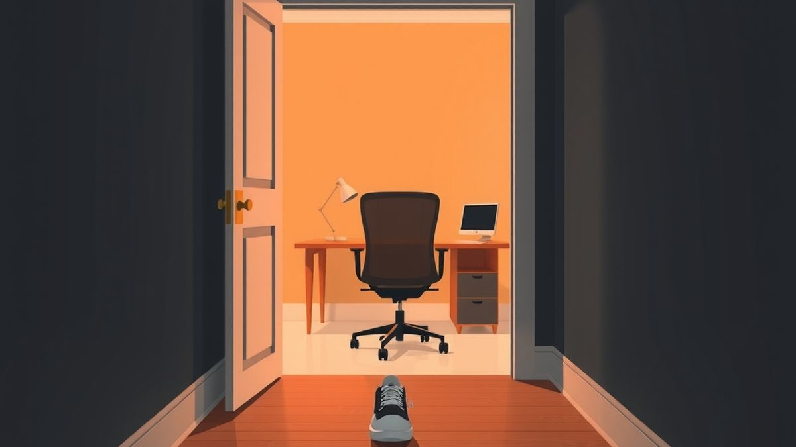
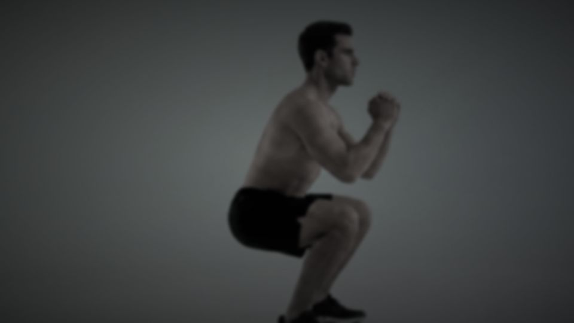

Sitting All Day? The Exercise Breaks That Actually Help
Sitting all day? How often to get up, how long a break needs to be, the desk exercises worth doing, and what the research says about undoing it.


TL;DR
- Break up sitting often. In a small 2023 trial, five minutes of walking every 30 minutes was the only schedule that lowered both blood sugar and blood pressure.
- If that's too often, get up at least once an hour. Some breaking up beats none.
- A daily workout helps but doesn't cancel sitting out. About 30–40 minutes of brisk activity a day weakened the link between sitting and death risk in a large observational study.
- Good desk breaks: a short walk, 10 chair squats, desk push-ups, a hip flexor stretch, calf raises. Each has an easier version.
- Attach breaks to calls, refills and finished tasks instead of trying to remember.
- Standing desks may cut sitting a little, but the evidence is weak. Moving is what the research tested.
It's 3:40. You sat down at 1:15 to "knock out one thing." You've stood up once since, to refill the water you didn't drink.
Your back knows. Your hips know. And somewhere in the back of your head is a headline you half-read about sitting being the new smoking.
So you do the responsible thing and open a list of 15 desk stretches. You read four of them. Then a message comes in, and you're back to the one thing.
Here's the short version of what the research says about sitting all day and exercise: the list matters less than the clock. Getting up every 30 minutes for a few minutes of walking or easy moves beats a perfect stretch you do once at 5 p.m. Below is how often, how long, which moves are worth it, and what a workout can and can't cancel out.
The short answer: every 30 minutes, a few minutes on your feet
The clearest test of this comes from a 2023 trial at Columbia University. Eleven adults spent eight hours in a lab chair, on separate days, under six conditions: sitting straight through, or getting up to walk on one of five schedules, from one minute every hour to five minutes every 30 minutes.
Five minutes of walking every 30 minutes was the only schedule that significantly lowered both blood sugar and blood pressure compared with sitting all day. Every walking schedule lowered blood pressure by about 4 to 5 mmHg. Most of them also lowered fatigue and improved mood. None changed performance on thinking tests.
The honest caveats: eleven people is tiny, it measured one day at a time, and most participants didn't have diabetes or high blood pressure. It tells you what helped in a lab, not what happens over years.
But it lines up with older work. In a 2012 trial in Diabetes Care, 19 adults aged 45 to 65 had lower blood sugar and insulin after a drink when they broke up their sitting with two-minute walks, at a light or moderate pace, than when they sat straight through. And a large 2017 study that put activity trackers on nearly 8,000 adults over 45 found that both more total sitting and longer unbroken stretches of sitting were linked to a higher risk of death. That study was observational, so it shows a link, not cause. Still, the direction is consistent: how you sit matters, not just how much.
If every 30 minutes isn't realistic for your job, get up at least once an hour. In the Columbia trial, hourly breaks did less for blood sugar, but every schedule helped blood pressure. Some breaking up beats none.
Can a workout cancel out sitting all day?
Partly. You've probably seen the headline that 40 minutes of exercise "undoes" 10 hours of sitting. The study behind it is real, and the headline goes further than it does.
A 2020 analysis in the British Journal of Sports Medicine pooled activity-tracker data from nine studies covering 44,370 middle-aged and older adults, followed for 4 to 14.5 years. Among people who did about 30 to 40 minutes a day of moderate-to-vigorous activity (the brisk-walk-or-harder kind), the link between lots of sitting and a higher risk of death was much weaker.
Weaker, not gone. And it's observational: people who move that much may differ in other ways. It also didn't test "10 hours" as a fixed dose; the average sitting time across the studies was roughly 8.5 to 10.5 hours a day.
The practical takeaway is that you want both. A real block of activity on most days, and fewer long, unbroken stretches in the chair. The WHO's 2020 guidelines say the same thing in plainer words: limit the time you spend sitting, and replace some of it with activity of any intensity.
The desk-break menu: 3-minute options
A break doesn't need to be a workout. Walking counts, and walking is what the Columbia trial tested. But if you can't leave your desk, or you want the break to do double duty for your hips and legs, pick one line from this table.
| Break | What to do | Easier version |
|---|---|---|
| Walk | 3–5 minutes: a lap of the floor, the stairs, the kitchen and back | March in place next to your desk |
| Chair squats | 10 sit-to-stands from your chair, slow on the way down | Use your hands on the armrests to push up |
| Desk push-ups | 10 push-ups with your hands on the edge of a sturdy desk | Hands on the wall instead |
| Standing hip flexor stretch | Step one foot back, squeeze that glute, hold 20–30 seconds per side | Shorter step, hand on the desk for balance |
| Calf raises | 15 slow raises onto your toes and back down | Hold the desk; go only halfway up |
Two of these need a quick safety check. For chair squats, use a chair that won't roll: lock the wheels, or use a kitchen chair instead. For desk push-ups, the desk has to be heavy and stable. If it shifts when you lean on it, use the wall.

Form cues that keep it easy on your body
- Chair squats: feet about hip-width, chest up, push your hips back toward the seat and stand up through your whole foot. Tap the seat; don't drop onto it. More detail in bodyweight squat form.
- Desk push-ups: hands a little wider than your shoulders, body in one straight line from head to heels, lower until your chest is close to the edge.
- Hip flexor stretch: keep your lower back neutral. The common mistake is arching and pushing the hips forward to feel "more" stretch. Squeezing the glute of the back leg does the work instead.

A workday plan that doesn't depend on remembering
The research answer is "every 30 minutes." The real-life problem is that nobody remembers anything every 30 minutes. So don't rely on remembering. Attach the breaks to things that already happen.
- Every call is a standing or walking call. If your camera is off, walk. If it's on, stand.
- Every refill is a lap. Use a smaller glass on purpose. It sends you to the kitchen more often.
- Every bathroom trip gets 10 chair squats when you sit back down.
- Every finished task gets a stand. Send the email, stand up, do one line from the menu, sit back down.
- For the stretches with no natural break, set a repeating 30-minute timer on your phone or computer. When it goes off, stand up before you dismiss it.
Most days you won't hit every half hour. That's fine. Going from one break in an afternoon to five is the change that matters. If you want the breaks to also build fitness, make one or two of them harder and faster: that's the idea behind exercise snacks.
Is a standing desk worth it?
It can help you sit less. Whether that makes you healthier is less clear than the marketing suggests.
A Cochrane review of workplace programs found very low quality evidence that sit-stand desks cut sitting at work in the short term, and not enough good evidence to say whether standing more at work improves health. The studies were small and short.
Standing still for hours isn't the goal either. What the trials above tested was moving, not standing. If you have a standing desk, use it to make getting up easier, and still walk away from it every so often.
Who should be careful
Everything here is gentle, but a few situations call for a doctor's input first: a heart condition, high or low blood pressure that makes you dizzy when you stand, pregnancy, a recent injury or surgery, or a long stretch of being inactive. If you get lightheaded standing up, stand slowly and hold the desk for a second.
Back, hip or neck pain that sticks around for more than a week or two, spreads down a leg, or comes with numbness or weakness is a reason to see a doctor or physical therapist, not to stretch harder.
Where Rep Rot fits (and where it doesn't)
Rep Rot isn't a sitting timer, and it won't tell you when 30 minutes have passed. What it does is catch a different moment: the one where a work break turns into 20 minutes of feed.
Rep Rot locks the apps you lose hours to until you get up and move. Set a daily limit on the app you drift to between tasks, and when you hit it, the app stays locked until you do a set, like 10 squats, counted by your iPhone's camera right on the phone. Nothing is recorded. It can't see which apps you picked or how long you used them, because Apple's Screen Time keeps that private, and someone determined can still get around a Screen Time limit. If you haven't set limits before, start with how to set app limits on iPhone that actually stick.

Pair it with the timer and the habits above, and both kinds of break end the same way: on your feet. Don't rot. Rep instead. Rep Rot has a free plan and a 7-day Pro trial, and it's in testing now: email help@reprotapp.com for early access.
Sources: Duran AT, Friel CP, Serafini MA, Ensari I, Cheung YK, Diaz KM, "Breaking Up Prolonged Sitting to Improve Cardiometabolic Risk: Dose-Response Analysis of a Randomized Crossover Trial", Medicine & Science in Sports & Exercise (2023); Columbia University Irving Medical Center, news release via ScienceDaily (January 2023); Dunstan DW et al., "Breaking up prolonged sitting reduces postprandial glucose and insulin responses", Diabetes Care (2012); Diaz KM et al., "Patterns of Sedentary Behavior and Mortality in U.S. Middle-Aged and Older Adults", Annals of Internal Medicine (2017); Ekelund U et al., "Joint associations of accelerometer-measured physical activity and sedentary time with all-cause mortality: a harmonised meta-analysis in more than 44 000 middle-aged and older individuals", British Journal of Sports Medicine (2020); Shrestha N et al., "Workplace interventions for reducing sitting at work", Cochrane Database of Systematic Reviews (2016); WHO guidelines on physical activity and sedentary behaviour (2020).